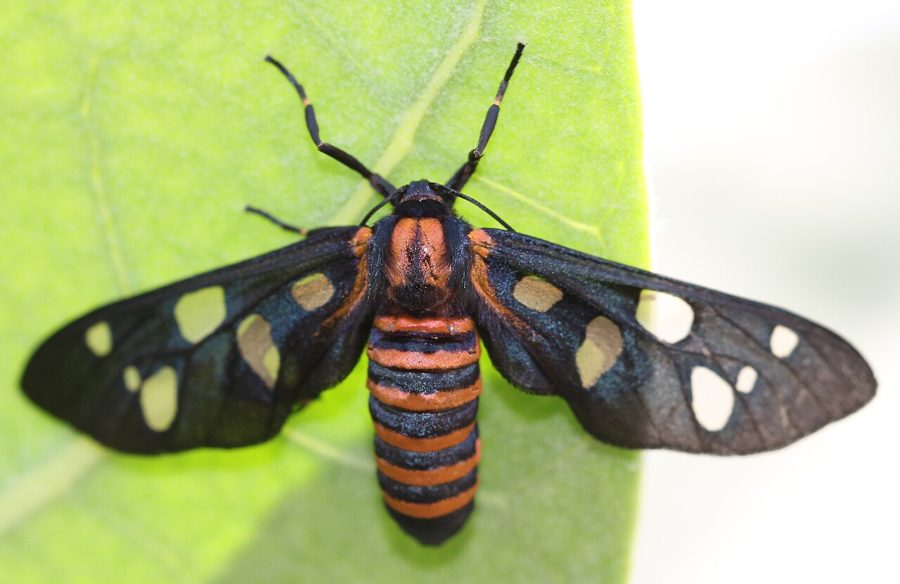

सैंडलवुड डिफोलिएटर पतंगाSandalwood Defoliator
Amata passalis · Erebidae · INS-0310

- Scientific name वैज्ञानिक नाम
- Amata passalis Fabricius, 1781
- Family कुल
- Erebidae
- Hindi हिंदी
- सैंडलवुड डिफोलिएटर पतंगा
- Local names स्थानीय नाम
- sandalwood defoliator, sandalwood defoliator patanga
- Status here यहाँ की स्थिति
- native
- Movement आवागमन
- Resident, here all year
- Known from कहाँ दर्ज
- Others have published records from the wider Awadh–Purvanchal plain, none yet from Basti–Ayodhya अवध–पूर्वांचल से दूसरों के प्रकाशित अभिलेख, बस्ती–अयोध्या से अभी नहीं
- IUCN IUCN
- not evaluated
- Review समीक्षा
- not yet reviewed
When to look कब देखें
Present all year. साल भर मौजूद।
Tell it apart from इनसे अलग पहचानें
सैंडलवुड डिफोलिएटर पतंगा / Sandalwood Defoliator
Amata passalis Fabricius, 1781 — Erebidae
सैंडलवुड डिफोलिएटर पतंगा — यह बैंगनी आभा वाले काले पंखों का एक छोटा पतंगा है जिसके पंखों पर छोटे पारदर्शी धब्बे होते हैं। इसके वक्ष के ऊपरी भाग और अगले पंख के आधार पर नारंगी-लाल निशान होते हैं। इसके पेट पर भी नारंगी-लाल रंग के संकरे छल्ले बने होते हैं।
Quick Identification त्वरित पहचान
| Feature | Description |
|---|---|
| Wingspan | 40 mm (Hampson 1892, p. 220) |
| Thorax & abdomen | Some traces of orange-red on vertex of thorax; bands of abdomen orange-red and rather narrow (Hampson 1892, p. 219) |
| Wings | Black, shot with purple (Hampson 1892, p. 219) |
| Forewing markings | Some orange-red at base and along inner margin; hyaline spots small: one subbasal, two medial, one subapical, and two submarginal (Hampson 1892, p. 219) |
| Hindwing markings | One small submarginal hyaline spot (Hampson 1892, p. 219) |
| Form montana | All the spots rather larger, the two in the interno-median interspace of the forewing almost joined (Hampson 1892, p. 220) |
Field tip: Look for a purple-glossed black moth with small hyaline spots (six on the forewing, one on the hindwing) and narrow orange-red abdominal bands (Hampson 1892, p. 219).
हिंदी: इसके पंखों का फैलाव लगभग 40 मिमी होता है। बैंगनी चमक वाले काले पंखों पर छोटे पारदर्शी धब्बे और पेट पर नारंगी-लाल संकरे छल्ले इसकी पहचान हैं।
Morphology आकारिकी
Biometrics:
| Measurement | Range | Source |
|---|---|---|
| Expanse | 40 mm | Hampson (1892, p. 220) |
Hampson (1892, pp. 219–220) describes the species: "Some traces of orange-red on vertex of thorax ; bands of abdomen orange-red and rather narrow. Wings black, shot with purple. Fore wing with some orange-red at base and along inner margin ; the hyaline spots small, one subbasal, two medial, one subapical, and two submarginal. Hind wing with one small submarginal spot."
Hampson (1892, p. 220) also notes the form montana: "The form montana has all the spots rather larger, the two in the interno-median interspace of the fore wing being almost joined."
हिंदी: हैंपसन (1892) के अनुसार इसके पंख काले और बैंगनी चमक वाले होते हैं। अगले पंख के आधार और भीतरी किनारे पर थोड़ा नारंगी-लाल रंग तथा छह छोटे पारदर्शी धब्बे होते हैं, जबकि पिछले पंख पर एक छोटा पारदर्शी धब्बा होता है।
Behaviour & Ecology व्यवहार और पारिस्थितिकी
Not available in consulted sources.
हिंदी: इसके व्यवहार और पारिस्थितिकी का विस्तृत विवरण देखे गए स्रोतों में उपलब्ध नहीं है।
Life Cycle / Phenology जीवन चक्र
Not available in consulted sources.
हिंदी: इसके जीवन चक्र और मौसमी गतिविधि का विवरण देखे गए स्रोतों में उपलब्ध नहीं है।
Host Plants or Prey आहार
Not available in consulted sources.
हिंदी: इसके भोजन-पौधों का विवरण देखे गए स्रोतों में उपलब्ध नहीं है।
Predators / Natural Enemies शत्रु
Not available in consulted sources.
हिंदी: इसके प्राकृतिक शत्रुओं का विवरण देखे गए स्रोतों में उपलब्ध नहीं है।
Agricultural / Human Relevance कृषि प्रासंगिकता
Not available in consulted sources.
हिंदी: इसके कृषि या मानव महत्व का विवरण देखे गए स्रोतों में उपलब्ध नहीं है।
Expected Locally स्थानीय रूप से अपेक्षित
Not a field record. Written from published accounts for eastern Uttar Pradesh. No confirmed local sighting yet — if you have seen it, that is what the atlas needs.
अभी तक स्थानीय पुष्टि नहीं। यह विवरण प्रकाशित स्रोतों से है, किसी अवलोकन से नहीं।
Hampson (1892, p. 220) gives its range as Assam and throughout continental India. GBIF holds published records from the wider Awadh–Purvanchal plain, none yet from Basti–Ayodhya: two records from Varanasi (24 October 2019 on India Biodiversity Portal, and 20 November 2024 with uncertain coordinates) and one photographed record from Ghazipur on 22 February 2025. A first local record would be a clear photograph showing the purple-black wings, small hyaline spots, and narrow orange-red abdominal bands with place and date, sent through the About page.
हिंदी: हैंपसन (1892) ने इसे पूरे महाद्वीपीय भारत में दर्ज किया है। जीबीआइएफ (GBIF) में वाराणसी से दो और गाज़ीपुर से एक अभिलेख है, पर बस्ती या अयोध्या से अभी कोई अभिलेख नहीं है।
Distribution वितरण
Global range: Hampson (1892, p. 220) gives: "Assam and throughout Continental India and Ceylon."
In India: Assam and throughout continental India (Hampson 1892, p. 220).
In Uttar Pradesh: GBIF holds two records from Varanasi (24 October 2019; 20 November 2024, uncertain coordinates) and one from Ghazipur (22 February 2025).
In Basti district / eastern UP: GBIF holds no record from Basti or Ayodhya.
हिंदी: हैंपसन (1892) के अनुसार यह असम, पूरे महाद्वीपीय भारत और श्रीलंका में पाया जाता है। उत्तर प्रदेश में जीबीआइएफ पर वाराणसी और गाज़ीपुर के अभिलेख हैं, पर बस्ती और अयोध्या से कोई अभिलेख नहीं है।
Research Questions शोध प्रश्न
Anyone can investigate these | कोई भी इन प्रश्नों की जाँच कर सकता है
- Does Amata passalis occur in Basti and Ayodhya districts, given records in nearby Varanasi and Ghazipur? / क्या बस्ती और अयोध्या में सैंडलवुड डिफोलिएटर पतंगा मिलता है?
- In which months are adults active in eastern Uttar Pradesh (given records in October, November, and February in nearby districts)? / पूर्वी उत्तर प्रदेश में यह पतंगा किन महीनों में सक्रिय रहता है?
- Which host plants do the larvae feed on in eastern Uttar Pradesh?
- Does the form montana with larger hyaline spots occur alongside typical individuals in Uttar Pradesh?
- Can a child count the small clear window-like spots on the black wings of a resting moth without catching it? (No equipment needed.)
हिंदी: कोई भी व्यक्ति बिना किसी उपकरण के फूलों या पत्तियों पर बैठे इस काले पतंगे के पंखों के पारदर्शी धब्बों और पेट के नारंगी छल्लों को देख सकता है।
Similar Species मिलती-जुलती प्रजातियाँ
| Species | How to tell apart | हिंदी |
|---|---|---|
| Handmaiden Moth (Amata cyssea) | Collar yellow; wing spots usually smaller than in bicincta and often yellowish with an extra spot between the two medial forewing spots; sometimes a small patch of white cilia near forewing apex; smaller than A. passalis (Hampson 1892, p. 213, as Syntomis cyssea) | पीला कॉलर, अक्सर पीलेपन लिए छोटे धब्बे और छोटा आकार (हैंडमेडन पतंगा) |
Field rule: A 40 mm purple-black moth with narrow orange-red abdominal bands, orange-red at the forewing base, six small forewing hyaline spots, and one small hindwing spot is Amata passalis (Hampson 1892, pp. 219–220).
हिंदी: बैंगनी-काले पंखों पर छोटे पारदर्शी धब्बे, अगले पंख के आधार पर नारंगी-लाल रंग और पेट पर संकरे नारंगी-लाल छल्ले सैंडलवुड डिफोलिएटर पतंगा की पहचान हैं।
Taxonomy & Classification वर्गीकरण
Original description. Fabricius, J. C. (1781). Species Insectorum, vol. 2, p. 159 (cited in Hampson 1892, p. 219).
Subspecies. Hampson (1892, p. 220) treats Syntomis montana Butler as a form (montana) with larger spots.
Family and order placement. Order Lepidoptera, family Erebidae (GBIF); other atlas members of Erebidae include Handmaiden Moth (Amata cyssea) and Tropical Tiger Moth (Asota caricae). Hampson (1892, p. 219, entry 442) placed it in Syntomidae under Syntomis.
Phylogenetic notes. Placed in Amata and Erebidae in modern classifications (GBIF), whereas Hampson (1892, p. 219) treated it as Syntomis passalis in Syntomidae.
IUCN status rationale. Not evaluated on the IUCN Red List.
हिंदी: इसका पहला वैज्ञानिक वर्णन फैब्रिसियस (1781) ने किया था। हैंपसन (1892) ने इसे Syntomis passalis के रूप में Syntomidae कुल में रखा था, जबकि आधुनिक वर्गीकरण में यह Erebidae कुल और Amata वंश में है।
Photo Gallery फोटो गैलरी
No photos yet — add field photos to media/species/sandalwood_defoliator/ and run node scripts/sync_photos.js.
Photos needed आवश्यक फोटो
- [ ] Dorsal view showing the purple-black wings and hyaline spots (ऊपरी सतह, बैंगनी-काले पंख और पारदर्शी धब्बे दिखाता चित्र)
- [ ] Abdomen showing the narrow orange-red bands (पेट पर नारंगी-लाल संकरे छल्ले दिखाता चित्र)
References संदर्भ
- Fabricius, J. C. (1781). Species Insectorum. Vol. 2, p. 159 (cited in Hampson 1892, p. 219).
- Hampson, G. F. (1892). The Fauna of British India, including Ceylon and Burma. Moths. Vol. 1 (pp. 219–220, as Syntomis passalis). Taylor and Francis, London.
- GBIF Occurrence Data — Amata passalis Fabricius, 1781, India (2025).
Source file: species/fauna/insects/sandalwood_defoliator.md